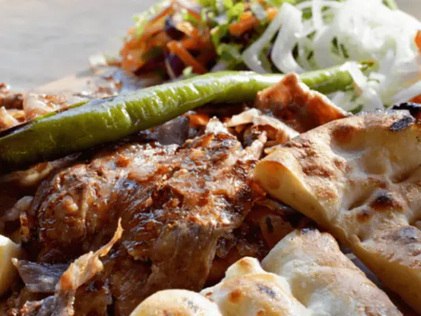
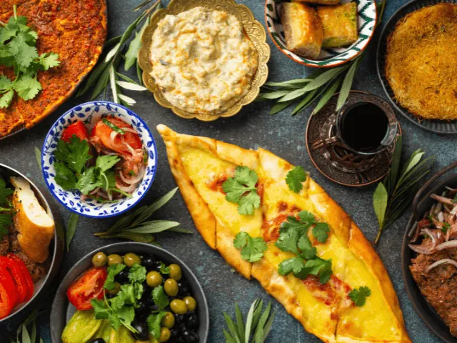
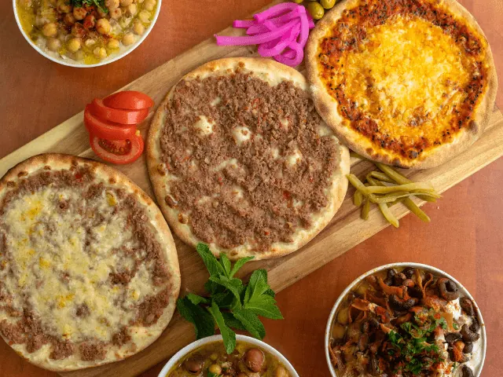
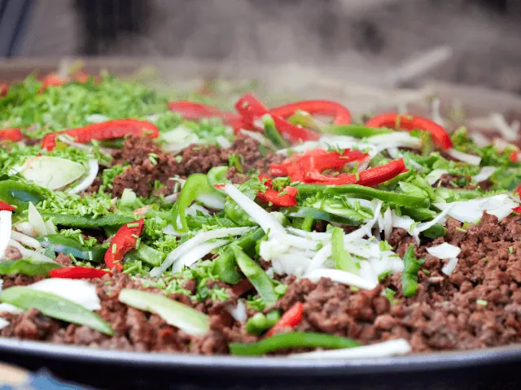

Heerlijke Turkse Specialiteiten in Nijmegen
Gepubliceerd op 9 februari 2023, bijgewerkt op 20 oktober 2023
Onderdeel van de gids Restaurants in Nijmegen

Zoals de meeste van ons wel weten, heeft de Turkse keuken enorm veel te bieden. Een broodje köfte of een heerlijke baklava, veel Nederlanders zijn dol op deze populaire Turkse gerechten. Er zijn in ons land dan ook veel verschillende Turkse specialiteitenrestaurants te vinden. Ook in Nijmegen kun je met volle teugen genieten van de Turkse keuken. Er zijn namelijk verschillende restaurants te vinden in deze bruisende stad.
Eén zeer hoog gewaardeerd Turks restaurant in Nijmegen is Mira. Restaurant Mira biedt fantastische Turkse gerechten aan van het hoogste niveau. Er zijn zelfs vegan opties mogelijk! Ook restaurants Serif Baba en Ziyafet in Nijmegen zijn echte aanraders. Hier kun je terecht voor zowel heerlijke Turkse als Italiaanse gerechten.
Ben jij ook fan van Turks eten, of wil je het simpelweg een kans geven? Dan ben je bij ons aan het juiste adres. In het onderstaande artikel bespreken we namelijk verschillende hooggewaardeerde adresjes in Nijmegen. Bij elk van deze restaurants kun jij terecht om heerlijk van de Turkse keuken inclusief de bijbehorende sfeer te genieten. Jij wilt deze aanraders absoluut niet missen!
Overzicht Turkse restaurants in Nijmegen
Turkse restaurants in Nijmegen – Onze top 3
Of je nu op zoek bent naar een vlug broodje döner of dat je uitgebreid wenst te genieten van al het lekkers dat de Turkse keuken te bieden heeft, in Nijmegen vind je voor ieder wat wils. Deze bruisende stad heeft een breed aanbod aan Turkse restaurants. Het kan zodoende nog best lastig zijn om een goede keuze te maken. Soms zie je immers door de bomen het bos niet meer. Wij helpen je in dat geval uit de brand!
We hebben speciaal voor jou een top 3 samengesteld met daarin enkele van de beste Turkse restaurants in Nijmegen. Wij weten absoluut zeker dat jij één van deze unieke eettentjes uit wilt proberen. Vegetarische opties of volledig halal, de onderstaande restaurants kunnen gehoor geven aan ieders persoonlijke wensen.
1. Restaurant Mira in Nijmegen
In het centrum van Nijmegen, vlak bij het Keizer Karelplein, vind je restaurant Mira. Het betreft een Turks restaurant dat zeer hoog staat aangeschreven. De reviews liegen er niet om. Het fantastische eten, de unieke sfeer en het uitermate vriendelijke personeel, restaurant Mira laat niets te wensen over. Dat belooft dus wat!
De menukaart van restaurant Mira bestaat uit diverse Turkse specialiteiten die jij absoluut een keer geprobeerd moet hebben. Een voorgerecht in de vorm van heerlijk Turks brood met een soepje, en een uitmuntend stukje vlees als hoofdgerecht. Uiteraard mag ook een lekker dessert niet ontbreken.
Nog een uniek aspect van restaurant Mira, is het feit dat er diverse vegetarische en zelfs veganistische opties te vinden zijn op de menukaart. Echt iedereen is dus welkom in dit fantastische Turkse restaurant in hartje Nijmegen.

2. Serif Baba in Nijmegen
In het westelijke deel van Nijmegen, op ongeveer een kwartiertje lopen van het oude stadscentrum, vind je het Turkse restaurant Serif Baba. Turkse specialiteiten thuis laten bezorgen of gezellig in het restaurant komen eten met familie? Bij Serif Baba is alles mogelijk.
Vooral de unieke Turkse sfeer is kenmerkend in dit restaurant. Het sfeervolle interieur en de prachtige gerechten zorgen ervoor dat gasten hier met grote regelmaat terugkeren. Ook de menukaart van Serif Baba is enorm veelzijdig. Van een klein voorgerecht tot een uitgebreid drie-gangen diner, het kan allemaal!
Serif Baba is een betaalbaar restaurant waar iedereen welkom is. Pizza’s, pasta’s, burgers of een heerlijke grill mix, aan ieders wensen wordt gehoor gegeven. De bediening is bovendien enorm vriendelijk. Wij weten zeker dat jij hier een heerlijke avond gaat beleven.

3. Restaurant Ziyafet in Nijmegen
Ook het laatste restaurant in onze top 3 is gevestigd in het centrum van Nijmegen. Het betreft een gezellig Turks restaurant met een kleurrijk interieur. De lokale ligging van dit restaurant, maakt het de ideale plek voor iedere toerist die Nijmegen bezoekt.
Het menu bestaat uit zowel Turkse als Italiaanse specialiteiten. Heerlijke pizza’s en de meest uiteenlopende Turkse grillgerechten. Dat wordt smullen. Het gehele menu is 100% halal. Het is dus een toegankelijk restaurant waar iedereen terecht kan.
Restaurant Ziyafet onderscheidt zich van de concurrentie met een dagelijks vers bereid menu. Alleen de allerbeste ingrediënten worden gebruikt om unieke Turkse specialiteiten op tafel te zetten.
Wat zeggen gasten zoal over dit veelzijdige restaurant?
- Sfeervolle uitstraling
- Uitermate snelle en vriendelijke service
- Overheerlijke verse gerechten
- Goede prijskwaliteit verhouding
Er is dus geen twijfel over mogelijk dat jouw etentje bij restaurant Ziyafet een succesvolle beleving van de Turkse keuken zal worden.
